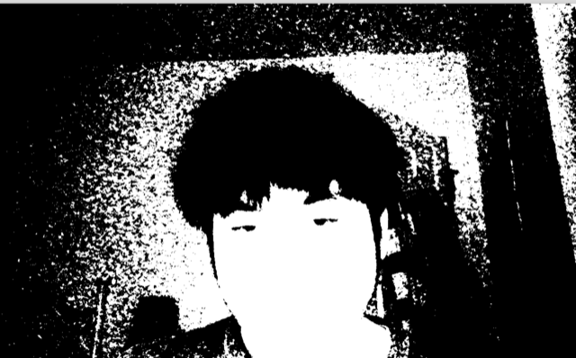
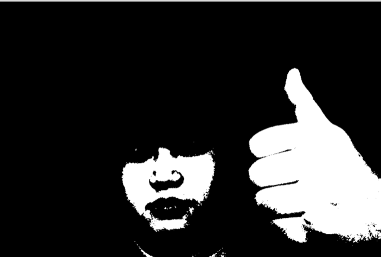
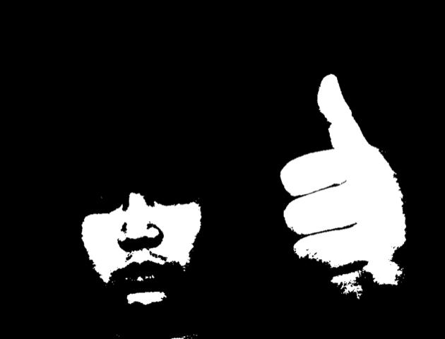
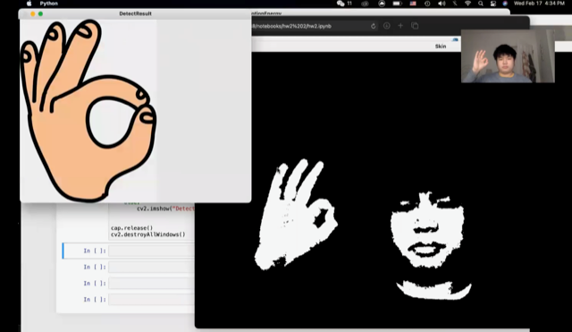
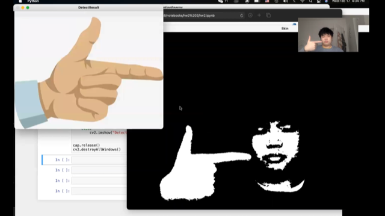
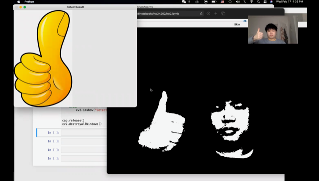
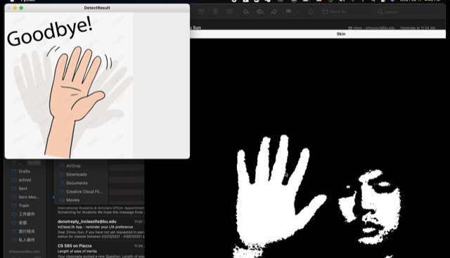
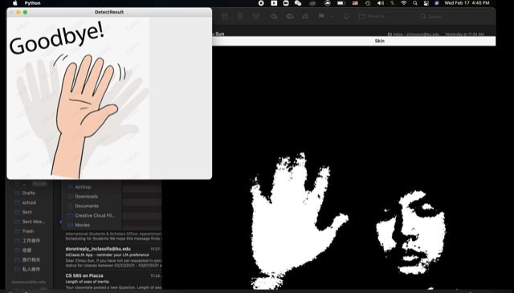

Problem Definition
The goal of this assignment to develop an algorithm that is capable of detecting different hand shapes or gestures. To problems we need to solve are: how to extract only the hand region from the original image frames; how to evaluate the probability of one handshape or gesture among all possible candidates; ; how to set up a threshold for the detection algorithm; how to make the program responsive. While developing the program, we assume the context/background is not too noisy and typically does not contain objects that have colors looked like skin color. The result of this program illustrates that computer vision is capable of interpreting certain body language.
Method and Implementation
This program was implemented in Python 3 with supports from openCV and numpy libraries. It will read video frames through a webcam, and detects if the videos contain any of the four given kinds of hand shapes and one hand gesture. There is a window, which will display the hand shape or gesture as soon as the algorithm recoginzed it.
Preprocessing Video Frame :
The first stage is preprocessing video frames. For each frame, we apply skin detection and use the OpenCV library function "cv2.findContours" to help identify the hand region of the original frame image. In skin detection, we set up a threshold B>20 , G > 40, R >150, and assign (255,255,255) to the pixels passed. Then the next task will be calling "findContours" function to find a list of bounding boxes from the preprocessing frame. And we pick the bounding box that gives us the largest area to return.
Hand Shape Detection:
For hand shape Detection we have created a set of binary templates for 4 kinds of hand shapes and use template matching to identify valid hand shapes from the input. We first resize the template to the same dimensions of the hand image(from preprocessing), then we call the openCV "absdiff" function to calculate the absolute difference between the template and the hand image. We also create a flipped version of the template, to cover the hand shape in the other direction. The smaller the difference between the image and the template the more likely it is a match. Eventually, there is a max difference value and a bounding box size check to guard the validity of our detection.
Hand Movement Detection:
For hand movement "waving", we have two types of binary template, frame-to-frame differencing templates set and
motion energy templates set, and two correspondings (types of) the hand image. To detect, we calculate the normalized correlation coefficient
for each template-"hand image" pair and submit the maximum NCC score to final check. We set a threshold for waving's NCC score(0.5),
and a minimum size check for the hand image. Additionally, to speed up the computation, the mean and standard deviation of templates were precalculated.
Experiments
I performed on different thresholds for red and green channels.
B G R values :
| 20_40_95 | 20_40_150 | 20_140_95 | 20_140_195 |
|---|---|---|---|
|  |  |
 |  |
Tuning the thresholds for red and green channels work well on reducing background noise, and leaving only skin regions.
Results
Eventually the program is able to detect four hand shapes: ok , pistol, thumb down , thumb up. And also one gesture :waving.
| ok | pistol | thumb down | thumb up | waving 1 | waving 2 |
|---|---|---|---|---|---|
|  |  |  |
 |  |  |
Discussion
Discuss your method and results:
- The program requires user to manully tune the skin detection thresholds when used under different contexts. However, once the tunning is done, the algorithm is capable of detect gesture and hand shapes, which it was designed to recognize.
- In the developement process, we found that using normalized correlation correfficient to measure how likelihood of a positive detection is quite accurate. Althought we only use NCC for gesture detection, but it was confirmed to work just as well on hand shapes detection. So the application of NCC is general success.
- There are many other measures like circularity , object orientation, centroid can be added to the likelihood calculate for each candidates. However, now we were not able to implement all these image moments into the algorithm due to the fact doing that will slow down the computation and make the program no longer respondsive
Conclusions
This program shows that computer vision has the potential of understanding human body language. But itself is not intelligent enough. In the future, we may consider add a feature that will make thee skin detection setting get adapted to the enviroment automatically. Also by further optimizing the way we implement heavy computation part of the algorithm, we may be able to add more measure to boost the precision of this program.
Credits and Bibliography
CS585: Lecture 1/18/2021 - 2/11/2021 CS585: Lab2 ,Lab3 (2021 Spring)
Thanks to Yipei Su, Bowen Sun, Hao He.